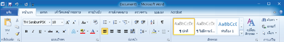

ส่วนประกอบของโปรแกรม Microsoft Word 2010

ภาพที่ 1 หน้าต่างของ Microsoft Word 2010
1. FILE Button (แฟ้ม) ปุ่มคำสั่งเกี่ยวกับการทำงานของแฟ้มงาน เช่น new, save, print เป็นต้น
2. Quick Access ToolBar (แถบเครื่องมือด่วน) เป็นแถบเครื่องมือให้คุณเรียกใช้งานได้อย่างรวดเร็ว
3. Title Bar (แถบชื่อ) แสดงชื่อโปรแกรมและชื่อเอกสารที่ใช้งานอยู่
4. Minimize (มินิไมซ์) พับหน้าต่าง Word
5. Restore Down (รีสโตร์ ดาวน์) ย่อขนาดหน้าต่าง Word
6. Close (ปุ่มปิด) ปิดโปรแกรม Word
7. Scroll bar (แถบเลื่อน)
8. View Bar (แถบปรับมุมมอง) แสดงมุมมองในรูปแบบต่างๆ
9. Status Bar (แถบสถานะ) แสดงรายละเอียดและสถานการณ์ทำงานของ word
10. Ribbon (แถบคำสั่ง) เป็นแถบที่รวบรวมคำสั่งต่างๆของเมนูหรือทูลบาร์ เพื่อให้ใช้งานได้ง่ายขึ้น
11. Document Windows (แผ่นเอกสาร) พื้นที่สีขาว
ปุ่ม จะแสดงอยู่ที่มุมซ้ายสุดของหน้าต่างโปรแกรมใช้สำหรับเปิดเมนูการใช้งานพื้นฐาน เช่น คำสั่ง New Open Save Save As Print และอื่นๆ รวมถึงคำสั่งที่ใช้ปรับแต่งการทำงานพื้นฐานของโปรแกรม Word Options เป็นต้น
ภาพที่ 2 เมนู FILE Button (แฟ้ม) ของ MS-Word 2010
คำสั่งหลักๆ ในปุ่ม Microsoft Office 2010 มีดังนี้
1. Save บันทึก บันเอกสารปัจจุบัน
2. Save As บันทึกเป็น บันทึกเอกสารที่เคยบันทึกแล้วเก็บไว้ในชื่อใหม่ หรือรูปแบบเอกสารใหม่
3. Save as Adobe PDF บันทึกเอกสารเป็นไฟล์ PDF
4. Open เปิด เปิดเอกสารเก่าที่มีอยู่
5. Close ปิด ปิดเอกสาร
6. info ข้อมูล แสดงข้อมูลของเอกสาร
7. Recent ล่าสุด แสดงงานที่เปิดใช้ล่าสุด
8. New สร้าง สร้างเอกสารขึ้นใหม่
9. Print พิมพ์ สั่งพิมพ์เอกสาร และดูเอกสารก่อนพิมพ์ (Print Preview)
10. Save & send บันทึกและส่ง บันทึกงานและส่งงานทางอีเมล
11. Help วิธีใช้ แนะนำวิธีการใช้งานของ Microsoft Office 2010
12. Options ตัวเลือก การตั้งค่าต่างๆ ของ Microsoft Office 2010
13. Exit จบการทำงาน
แท็ปและริบบอน (Ribbon) ของ Word 2010
แท็ปของ Word 2010 จะแยกกลุ่มออกตามฟังก์ชั่นการทำงานของโปรแกรม ถ้าผู้ใช้ต้องการแทรกวัตถุหรือภาพลงในเอกสารก็ต้องคลิกแท็ป แทรก แล้วริบบอนที่เกี่ยวข้องก็จะแสดงขึ้นมา เป็นต้น
ริบบอน (Ribbon) ได้พัฒนาขึ้นมาแทนคำสั่งทั้งหมดของ Word 2010 ซึ่งเดิมเราต้องเข้าไปเลือกใช้ผ่านเมนูหลัก แต่ในรุ่น 2010 นี้เราเพียงคลิกเลือกริบบอนที่ต้องการใช้งานก็สามารถทำงานได้ทันที
1. หน้าแรก (Home) : เป็นแท็ปแรกของ Word 2010 แท็ปนี้จะรวมริบบอนที่ใช้งานบ่อยๆ เอาไว้ เช่น การจัดการหน้าของเอกสาร รูปแบบตัวอักษร เป็นต้น

ภาพที่ 3 หน้าแรก (Home)
2. แทรก (Insert) : แท็ปนี้จะเกี่ยวกับการแทรกรูปภาพหรือเลขหน้าลงในเอกสาร หรือแทรกสมการคณิตศาสตร์เพื่อใช้งาน เป็นต้น
ภาพที่ 4 แทรก (Insert)
3. เค้าโครงหน้ากระดาษ (Page Layout) : เป็นแท็ปสำหรับออกแบบหน้าเอกสาร เช่น การกำหนดขนาดและระยะขอบของเอกสาร การกำหนดรูปแบบสีและฟอนต์ การกำหนดพื้นหลังหน้ากระดาษ การใส่สีพื้นหรือการแทรกสดมภ์ เป็นต้น
ภาพที่ 5 เค้าโครงหน้ากระดาษ (Page Layout)
4. การอ้างอิง (References) : แท็ปนี้จะรวบรวมริบบอนที่เกี่ยวกับการจัดหน้าสารบัญของเอกสาร
ภาพที่ 6 การอ้างอิง (References)
5. การส่งจดหมาย (Mailings) : รวบรวมริบบอนทางด้านการสร้างจดหมายเวียน ป้ายผนึกใบปะหน้าและโทรสาร เป็นต้น
ภาพที่ 7 การส่งจดหมาย (Mailings)
6. ตรวจทาน (Review) : เป็นแท็ปที่เกี่ยวกับการตรวจสอบเอกสาร เช่น การตรวจสอบคำผิดหรือการใส่หมายเหตุของเอกสาร เป็นต้น

ภาพที่ 8 ตรวจทาน (Review)
7. มุมมอง (View) : แท็ปนี้จะรวมการแสดงผลของโปรแกรม Word 2010 เช่น การตั้งค่ามุมมองของเอกสารและการขยายเอกสาร เป็นต้น
ภาพที่ 9 มุมมอง (View)
แบบทดสอบหลังเรียน